Structure
The Flow
- Wanna talk
- Ok. Let’s talk. Here is my public key. Here are the protocols that I support.
- Thanks Checks for known hosts locally. Here’s my password.
Keys
There are several keys that are used in this play. Three keys exist at the very begining. A user has his green key, TGS has its yellow one and the HTTP server has a black one. Each key is private to the party and is not know by other parties. Two more keys are generated during the authentication process: a purple and a crimson one. Keys also need to be printer out: one copy for green, black and yellow keys and two copies for purple and crimson ones. Here is the ininital “state”.

Messages
Below are all the messages that need to be printed. These messages are going to be exchanged and “decrypted” during the play. Each message has a symbol of envelope ✉️ at the right corner. Its color corresponds to the party’s color: user’s green, AS’s blue, TGS’ yellow, HTTP server’s black. The same goes for the locks that can be drawn right upon the envelope sign. These locks mean that the message is encrypted. It’s never encrypted with the key that belongs to the author of the message, so the colors of locks and enveloped never match! For example, if the lock is yellow and the envelop is blue, it means that the message was generated by AS (since it’s blue) and encrypted with a TGS key (since the lock is yellow). To unlock the message one needs a yellow key.
All the keys that a particular party has is listed by its avatar.


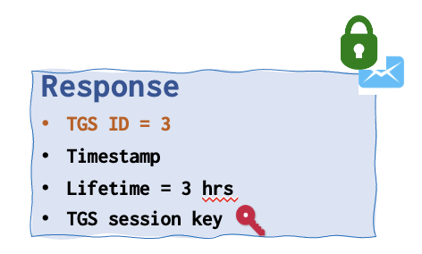
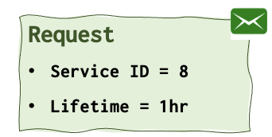
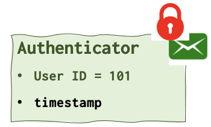

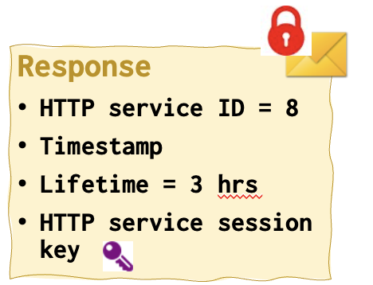

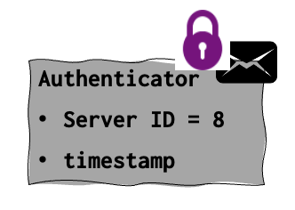
The Play
When I was working in DrWeb I have designed an interactive presentation that helped to understand how Kerberos worked. My four collegues all were wearing T-shirts of different colours: green, black, blue and yellow. Luckily, these were the colours I used in my presentation as well (just a coincidence).
Each colleague was to play a ceratin role in this play: a user (green 🌱), an authentication service (blue 💦), a TGS (yellow 🌞) and an HTTP server (black 🥷). Instead of an HTTP there could be any other server, Afterall, all of these operations were designed to ensure secure authentication to some server. Could as well be an FTP or something less boring.
Each person representing a party was given an envelope colored with his color (blue, green, black or yellow), which contained appropriately colored messages and keys (yes, I’ve actually printed on the paper and cut these messages and keys).
Step 1. User initiates authentication
A user 🤣 wants to connect to an HTTP server, but he cannot do so just like that. He needs to go through several levels of hell to achieve that goal and we are about to see them under the microscope.
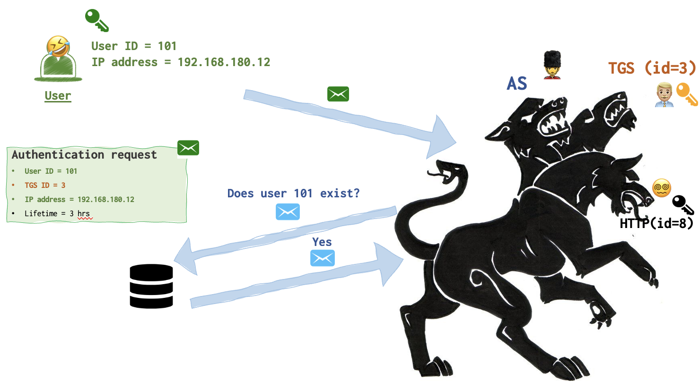
So, as is we can clearly see from the picture above, this message (the first in this chain) is called Authentication request. It contains several data fields: userid, tgsid (id number of a Ticket Granting Ticket), user’s IP address and the lifetime this request is valid for. This message is destined for the AS 💂♀️ (Authentication server).
- I wanna see the pictures of cute snakes 🐍.
The collegue playing the user 🤣 (green) hands an authentication request message to the person who’s playing the AS 💂♀️.
Step 2. AS generates a Ticket Granting Ticket
AS 💂♀️now generates the crimson key 🔑 for the user 🤣 and TGS 👨🏼💼 communication.
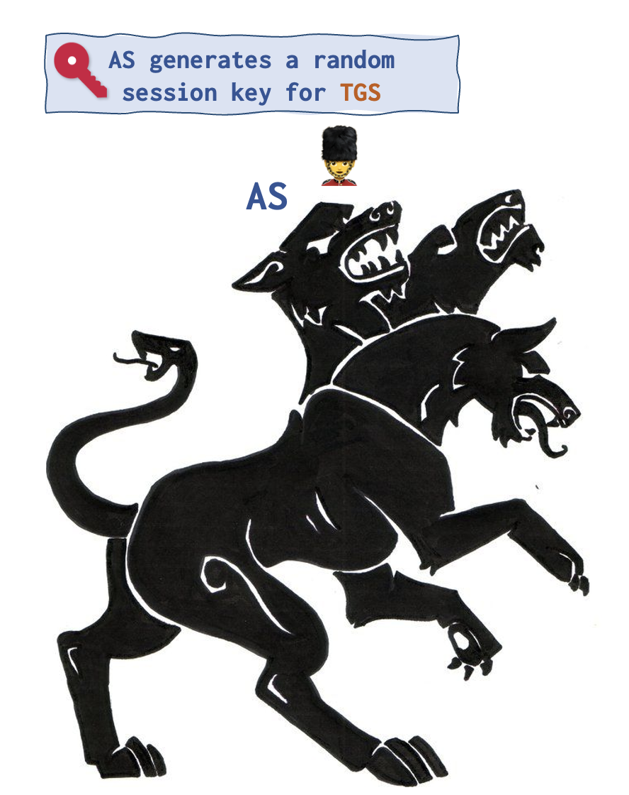
AS 💂♀️ then generates two messages: Response and Ticket Granting Ticket. Both messages contain this newly created crimson key. The contents of these messages is almoust the same (see below). The only difference is that Ticket Granting Ticket contains user id as well.
The Response is encrypted with the user’s green lock and only the user’s green key can unlock it.
Ticket Granting Ticket is locked (encrypted) with the TGS 👨🏼💼 yellow key and thus only TGS 👨🏼💼 can unlock it with its yellow key 🔑.
So, even though the user 🤣 receives this Ticket Granting Ticket, he cannot read it. He only can view the contents of the Response that he has a key for. The crimson key is found in both messages, so that the user 🤣 wouldn’t be able to tamper the TGS session key. Since the second message is encrypted and the user 🤣 presumably doesn’t have a key (he shouldn’t), he can tamper only the key that’s in his own message. But in this case the key in Ticket Granting Ticket won’t be able to open (dectrypt) the Authenticator message.
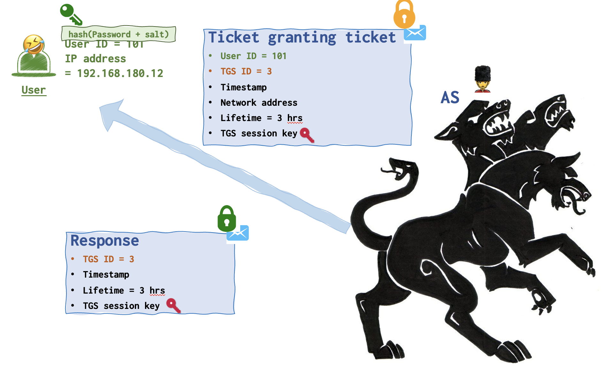
- 💂♀️Here is your ticket to get the ticket, pal!
The person playing AS hands the person playing the user two messages: Response locked with a green lock and a TGT locked with a yellow lock. Both messages have crimson keys attached. User keeps all of that for now.
Step 3. User requests the ticket
So, the user 🤣 has nothing else to other that open the Response. Now, ther user 🤣 can grab the crimson key and add it to his collection.
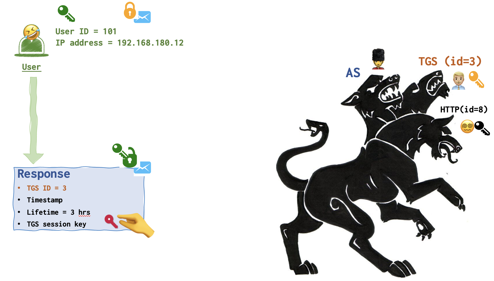
Now the user 🤣 has the crimson key and can lock messages with crimson locks and unlock them as well.
But wait, to whom is this Ticket Granting Ticket destined? Do you remember, it’s still in the user’s archive! It’s for TGS 👨🏼💼, of course. TGS 👨🏼💼 is the only party that has a yellow key 🔑. So, the user just forwards it to the TGS.
Remember, that the ultimate goal is to get the ticket for HTTP server. But at this stage the user only has the Ticket Granting Ticket, basically a ticket to get another ticket! It’s needed by the TGS to issue a ticket that the user really wanted to get from the very start.
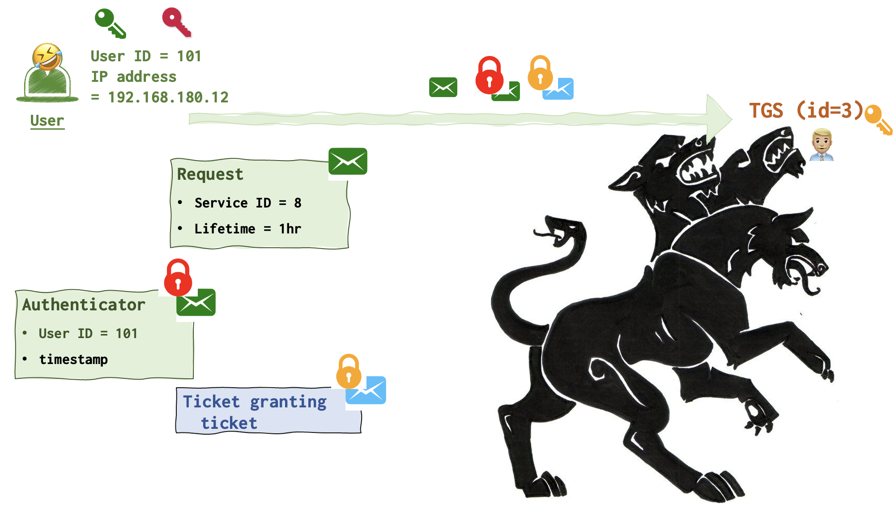
So, the user 🤣 generates two messages: Request (unencrypted) and Authenticator (locked with crimson lock). These two messages are then forwarded to TGS 👨🏼💼 along with the TGT that was received from AS 💂♀️ and remains encrypted.
- I have the Ticket to get the ticket. Give me the ticket!, - the user says, handing the TGS player three messages along with the TGT and the second copy of the crimson key. See the picture above.
Step 4. User gets the ticket
Now, TGS 👨🏼💼finally uses his yellow key to unlock the TGT and grabs the crimson key as well.
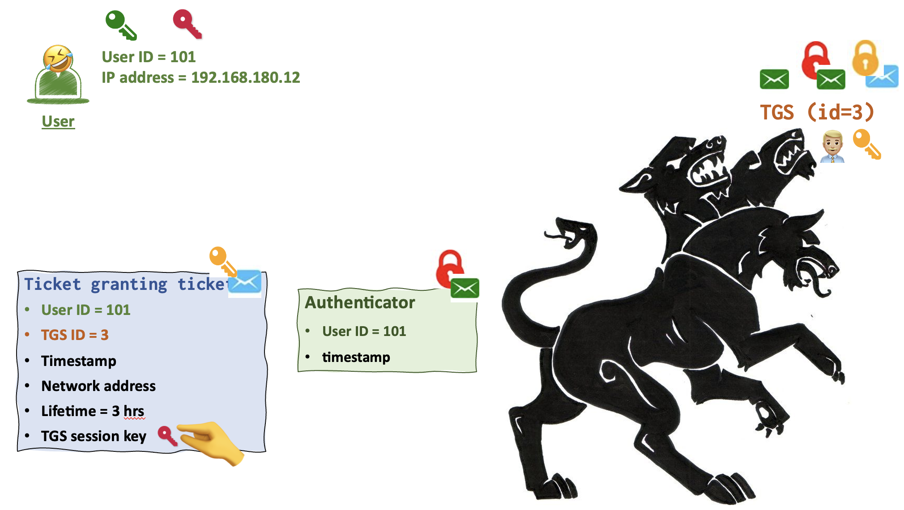
TGS 👨🏼💼 has now the key to unlock the Authenticator message from the user locked with a crimson lock.
TGS 👨🏼💼takes some time to compare the data in these messages, validate IP address and cache. It also checks whether the TGS session key (crimson key) is not expired, by the way!
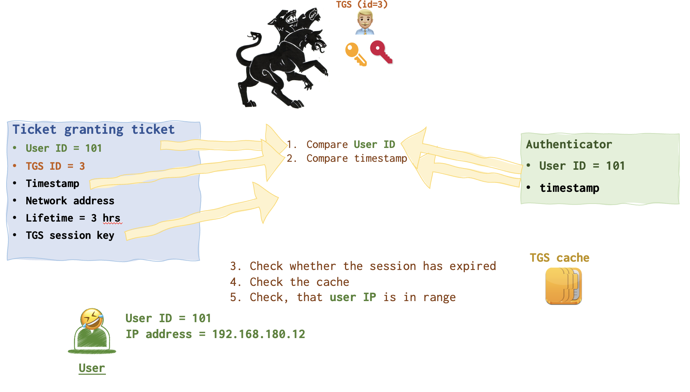
If everything is in order, TGS 👨🏼💼 generated yet another key, the purple one (HTTP session key is its boring name).
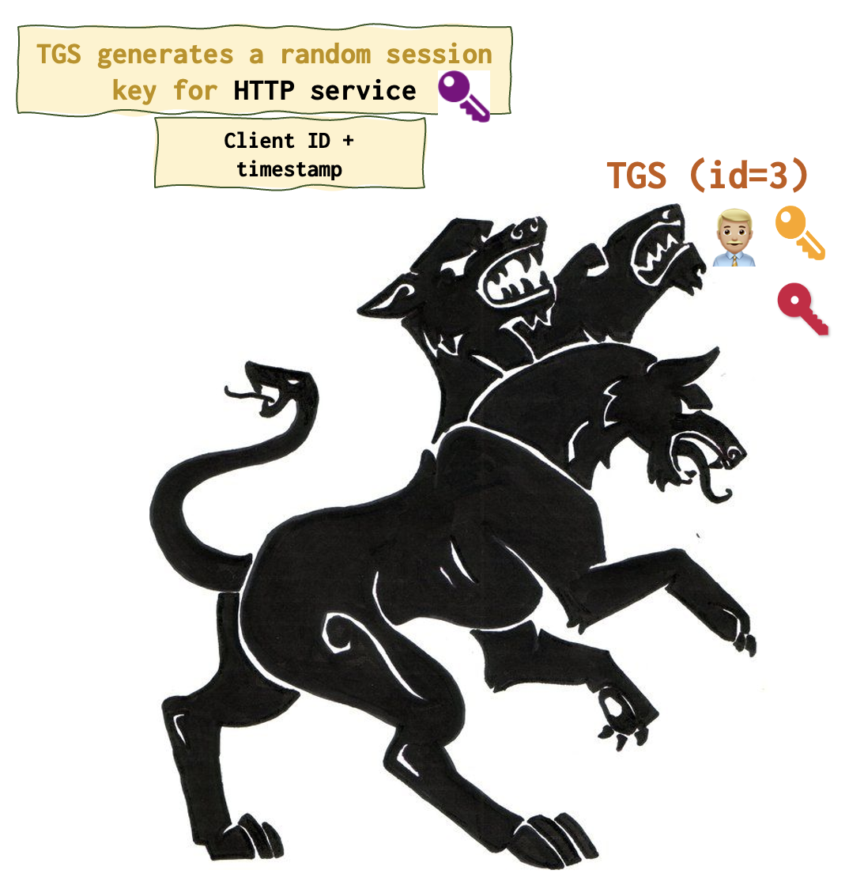
The following responses resemble the ones that were sent by AS during the second step. Except that they encrypted with other keys and contain other keys as well.
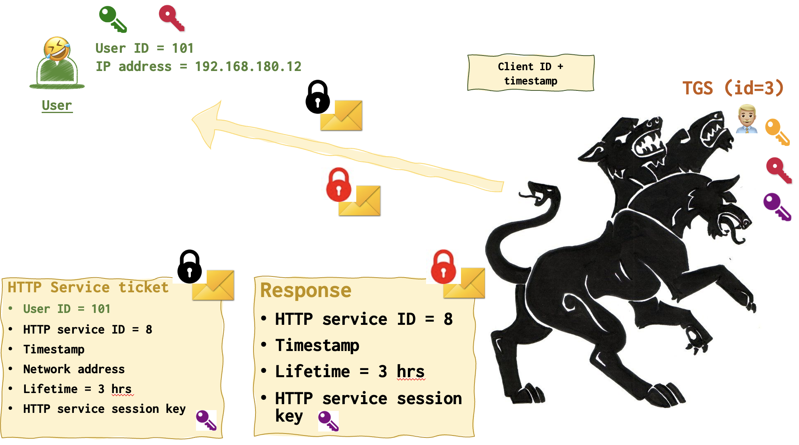
Both HTTP Server ticket and Response contain a purple key. However, remember that the use only has the crimson key. Who has the black one then? HTTP server 😵💫! So, user can only unlock the Response and get the purple key, adding it to the collection.
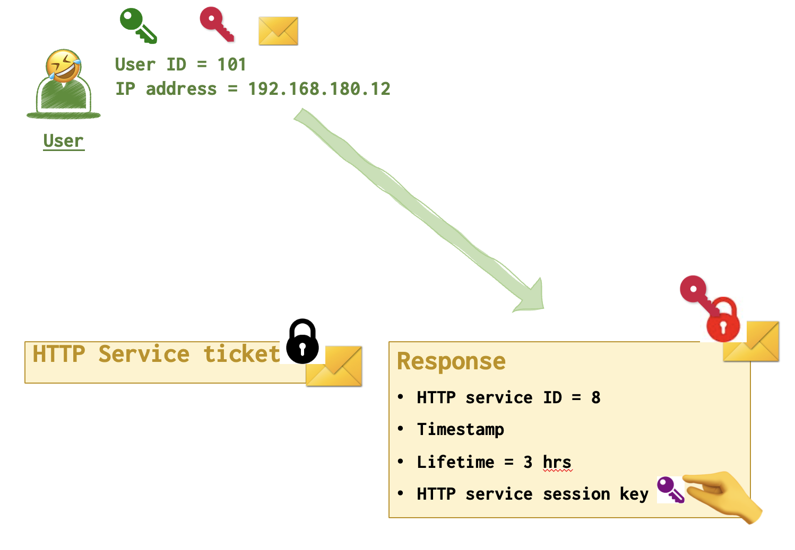
The second message remains locked and just gets forwared to the HTTP server 😵💫 since it’s the only one who can open it.
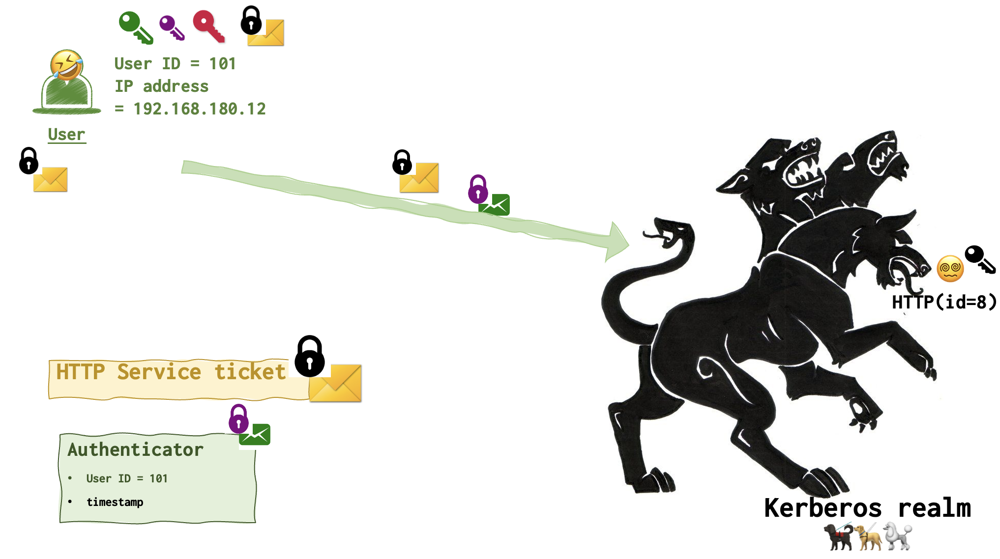
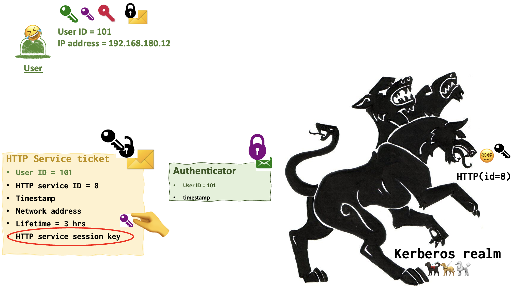
HTTP server 😵💫 uses its black key to open the black lock and read the HTTP Server Ticket. It grabs the purple key from the message and uses it to unlock the Authenticator message.
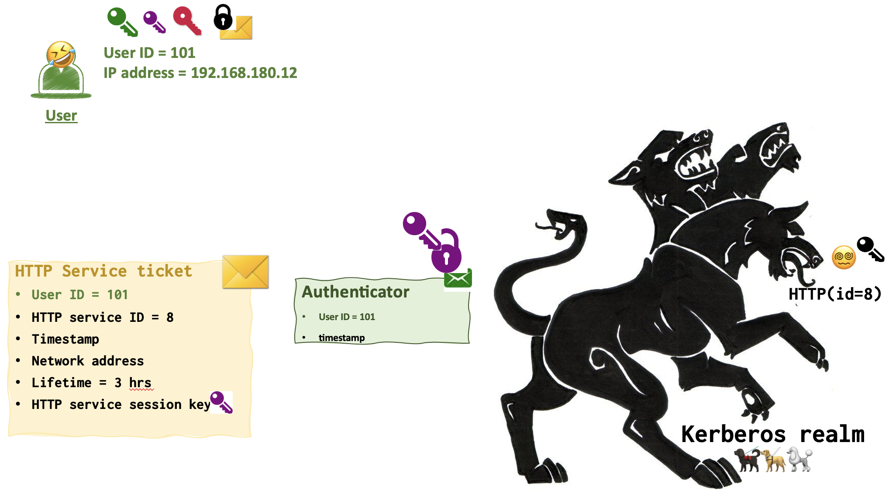
The following check are exactly the same as the TGS performed earlier: compaing userid, timestamp, session expiration date. Checking cache and user IP.
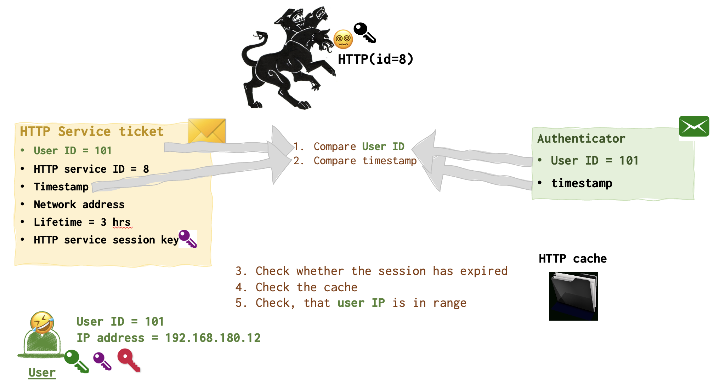
🤺 By the way, this black key can be stolen by the attacker to craft
If everything is ok, the user finally gets his ticket!!!
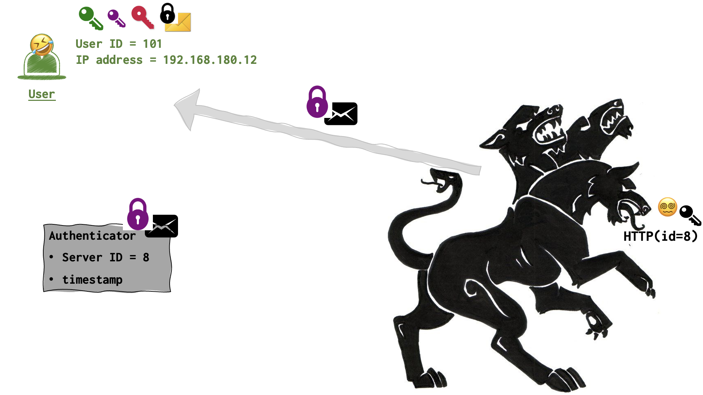
The End
That’s the final set up with the keys. The user 🤣 has a green, purple and crimson keys. AS 💂♀️ has crimson only. TGS 👨🏼💼 - yellow, crimson and purple. HTTP server 😵💫 - black and purple only.
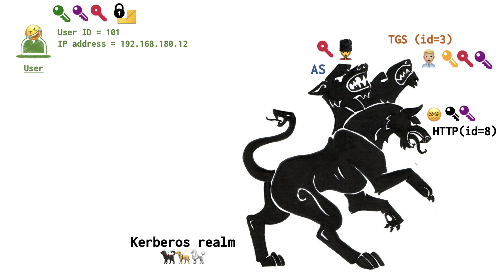